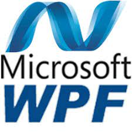
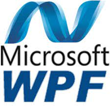

About Me
Hello! I'm a dedicated computer programmer with a strong background in VB.NET and WPF development, coupled with proficiency in C++. Currently, I'm on a rewarding academic journey pursuing a degree in Computer Science and Mathematics at Penn State Behrend.
My programming experience extends to crafting robust applications in VB.NET and leveraging the versatility of WPF for intuitive user interfaces. In addition, I possess a solid foundation in C++, contributing to my repertoire of skills in software development.
Beyond my academic pursuits, I am deeply fascinated by puzzle-solving algorithms and the transformative world of machine learning. These interests fuel my curiosity and drive me to explore innovative solutions in the dynamic field of computer science.
I'm passionate about pushing the boundaries of what technology can achieve and look forward to contributing my skills and knowledge to impactful projects in the future.
Skills
- Computer Programming
- C++, VB.NET, Java, mySQL
- WPF


 

Experience
Developer - KMD Technology Solutions, LLC | Nov 2019 - Present
I developed a system administrator tool using VB.NET, XAML, and HTML. This tool simplifies the creation of complex emails by providing a user-friendly interface for input. Additionally, I streamlined the deliverable creation process to enhance efficiency in task entry.
In terms of user interaction, I implemented the MVVM method to create an informative page. This page informs users about activities that occurred since their last login, providing valuable insights into system events.
As part of system maintenance, I conducted standard bug testing and repairs to fix broken features. Moreover, I refreshed older features, giving them a more modern and visually appealing style.
To enhance data accessibility, I developed multiple REST endpoints using ASP.NET Web API. These endpoints were seamlessly integrated to securely access data stored in a Microsoft Azure-hosted database. To facilitate collaboration with an outsourced development team, I supplied comprehensive comments and documentation via Swagger UI.
For process automation, I configured scheduled tasks using Azure webjobs. This setup ensured the smooth execution of automated processes, contributing to the overall efficiency of the system.
Undergrad Researcher - Penn State Behrend | May 2023 - August 2023
Under the guidance of a Penn State Professor, I developed an algorithm to solve KenKen puzzles in C++.
Education
Computer Science - Penn State Behrend | 2026
Provide details about your academic background.
Contact
- Email: nmdigilio@outlook.com
- LinkedIn: linkedin.com/in/nathandigilio/
- GitHub: github.com/ItalianRagazzo